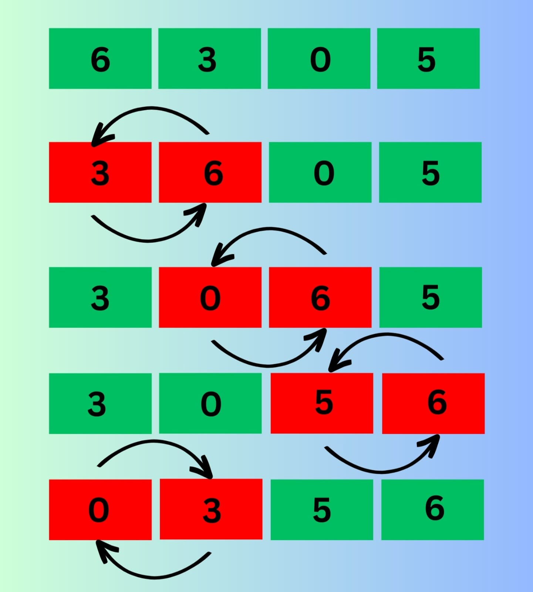
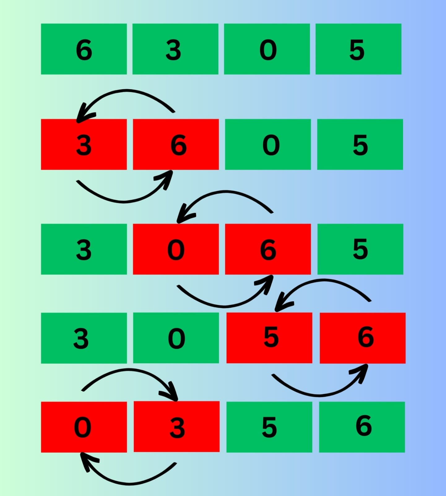
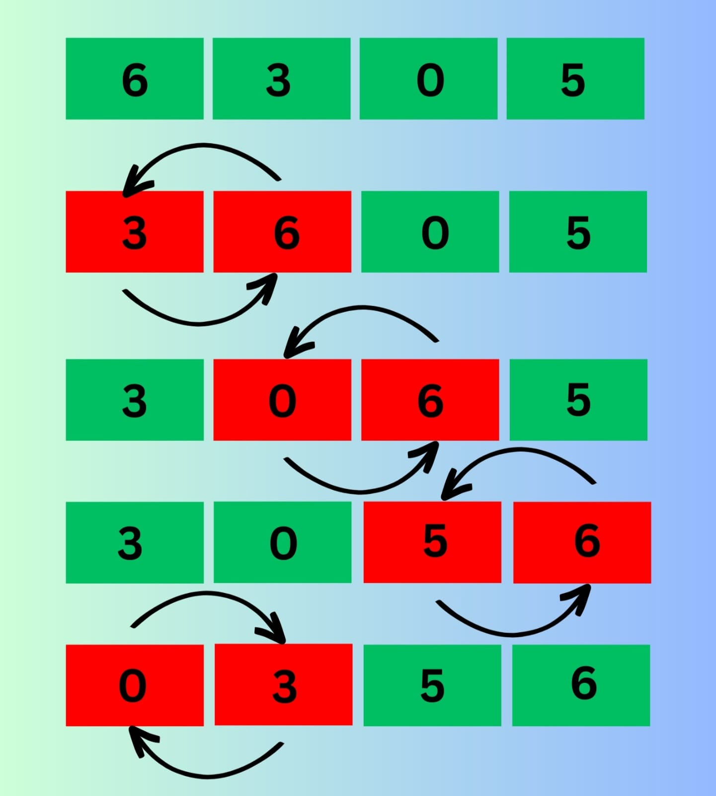

➤ Bubble sort algorithm is an algorithm that sorts an array by comparing two adjacent
elements and swapping them if they are not in the intended order. Here order can be
anything like increasing or decreasing.
How Bubble-sort works?
➤ We have an unsorted array arr = [ 1, 4, 2, 5, -2, 3 ], and the task is to sort the array using bubble sort in ascending order.
Bubble sort compares the element from index 0 and if the 0th index value is greater than 1st index value, then the values get swapped and if the 0th index value is less than the 1st index value, then nothing happens.
Next, the 1st index value compares to the 2nd index value, and then the 2nd index value compares to the 3rd index value, and so on…

Demonstration of Bubble Sort
Optimized Bubble sort Algorithm
➤In the bubble sort algorithm, comparisons are made even when the array is already sorted. Because of that,
Because of that, the execution time increases.To solve it, we can use an extra variable swapped. It is set to true if swapping requires; otherwise, it is set to false.
It will be helpful, as suppose after an iteration, if there is no swapping required, the value of variable swapped will be false. It means that the elements are already sorted, and no further iterations are required.
 
